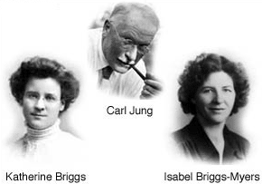
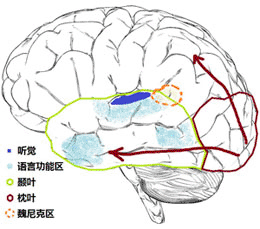

MBTI职业性格测试完整版注：MBTI模型源自荣格(瑞士)与Myers-Briggs(美国) 引导语：“我性格内向/外向，适合什么工作？”“哪些职业正好匹配我的性格？”“以我的个性从事什么行业好？”“我性格中的优势和劣势是什么？”“我是不是该继续现在从事的职业？” 不论是正待走进职场的毕业生，还是工作了一段时间的人，面对这类问题都会感到困惑――性格因素和职业选择之间到底存在什么样的关联呢？  要回答诸如此类的问题，我们就必须先了解到底性格差异是如何形成的。 瑞士心理学家荣格(Carl Jung)认为：感知和判断是大脑的两大基本功能。大脑做决定的瞬间可以慢动作分解为两个阶段：感知阶段（又分为触觉感知阶段和直觉感知阶段）和判断阶段（又分为感性判断和理性判断阶段）。 为方便我们的理解，我们把大脑做出决定的瞬间直观想象为如下流程：（大脑获取信息后）触觉感知――直觉感知――感性判断――理性判断，最后做出决定。 不过请记住实际上这一过程是在瞬间交织（并非想象中简单的线性）完成的。 早已了解MBTI理论？
点击这里直接开始MBTI职业性格测试 | 我是企业人力资源
虽然每个人的大脑做出决定的瞬间都要走这四个流程，但是不同的人在其中某个环节中的倾向程度不同（也可以理解为滞留时间长短不同）：有些人更倾向停留在触觉感知环节多一些，而直觉感知一带而过；有些人在判断环节，更倾向停留在感性判断多一些，理性判断一带而过。 此外，大脑的这两大基本功能还受到每个人的精力来源不同与生活方式差异的影响（由美国心理学家Katherine Cook Briggs 提出），最终的决定就千差万别了。经过多年的实践和不断优化，荣格的人格分类理论已成为目前国际上有数据支撑的性格分类模型的理论基础。 性格会不会随着环境和时间的改变而发生改变呢？ 心理学认为，性格是心理活动的体现，而心理活动是大脑活动的产物。我们的意识、情绪都是由大脑中的神经元、灰质、树突、轴突、神经递质等共同作用的结果。在我们人生的最初几年(包括胚胎时期)，脑部的主要任务是确定所有脑细胞正确地连结起来。不只是建立细胞间的连结，还要把某些连结切断――3岁小孩脑细胞之间的连结是成年人的两倍――这些连结是乱七八糟的――为了妥善运作，脑部必须决定哪些连结要保留，哪些要断裂。在有限的大脑关键发育期间脑部必须检查成千上万兆的连结，因此不得不采取“残忍”而有效的原则：用不着的就自动断裂。  那么脑部如何判断哪些连结用得着，哪些用不着呢？通过观察，科学家总结出了大脑的判断规律：不断探测哪些区域经常受到刺激，而哪些区域极少受到刺激来决定是否断裂这些区域的连结。也就是说很少受到刺激的部分将自动断裂。通过发生在1970年洛杉矶郊区女孩吉妮身上的悲剧（被其精神情况极不稳定的父亲绑在一个小房间的椅子上长达12年半，因为父母几乎没有跟他说过话，她的脑部负责语言的部分几乎没有受到刺激，导致终身受损。吉妮被解救出来后通过多年语言训练，至今仍无法学会说话，只能“像动物一样呜咽”），这证实了大脑神经科学家对人类大脑初期发育的理解：过了脑部发育的关键时期，人的大脑结构基本定型，之后的环境变化以及训练很难改变大脑的构造，也很难改变基于大脑结构功能区特征。 同样，我们正常人在大脑发育关键时期接受到的刺激是有所不同的（当然刺激范围和种类是基本接近的），刺激的程度和强度也有一定差异。这些微小的差异对大脑发育的连结断裂以及结合时期的影响在于改变了功能神经元连结的强度。这些功能神经元连结强度对我们将来的获取信息、思维、决策方式都将产生一生的影响。因此，从心理学角度而言,性格一旦形成是不会发生改变的（荣格曾举过有极个别例子，比如在童年时期遭遇巨大情感挫折，可能会由外向转为内向）。 以荣格的《人格分类》理论为基础，美国的心理学家Katherine Cook Briggs (1875-1968) 和她的心理学家女儿Isabel Briggs Myers根据她们对于人类性格差异的长期观察和研究，提出了影响大脑作出决定的第四因素：生活方式。综合荣格的人格分类学说形成MBTI。MBTI是一种迫选型、自我报告式的性格评估理论模型，用以衡量和描述人们在获取信息、作出决策、对待生活等方面的心理活动规律和性格类型。通过MBTI模型，性格和职业之间的联系得到了比较清晰地阐释。比如到达一定倾向度的NT型更适合做研究开发类职业（或从事此类职业更容易激发其天然优势），而不是从事销售或客服。到达一定倾向度的STJ更适合从事管理行政类职业，而不适合艺术、设计类职业...经过70多年的实践和发展，MBTI现在已经广泛应用到企业招聘选聘心理学测量、内部人才盘点及职业规划、职业测试等众多领域。 才储团队正在对人格分类理论模型进行全面的回顾和梳理，并对当前应用最为广泛的经典心理测量工具作对比评价。以下是根据美国Eastcarolina大学心理学专业的MBTI-G版本(量表版本：1998-N）的改编量表。希望帮助大家找到了解自己的线索。对于在职人士，MBTI也许可以帮助你判断与工作对应的程度如何，或帮你解答在事业上的一些疑惑。你的工作是否具备做些许调整的可能性呢？归根结底，工作须能惬意，须能发挥能力才行。为达此目标，该做的事业选择永不嫌迟。 特别说明：性格没有好与坏，测试的目的是反映最真实的自己，而不是别人所期待的你。请最大程度放松下来，选择当您面临下述这些情况时不由自主、自然和不假思索的决定或倾向。 若您是企业人力资源，请从这里进入体验>>>>
重要提示：测试前请务必阅读以下“MBTI核心规则”及“MBTI施测流程和行为规范”： MBTI核心规则可以浓缩成三个短句：倾向不是能力（Type not trait）、自己的判断才是最符合的判断（Own best judge）、类型无对错（No right or wrong）。 A、MBTI类型不显示能力的强度。问卷通过偏好来确定倾向，而不是能力强度或程度的能力。在这个意义上，它不同于基于性状的工具如16PF，其类型的偏好是对立的两极。 B、个人所认为的自己的类型往往是最符合其自己的判断。MBTI问卷提供报告的类型，可以被认为是可以参照的整体概貌。最佳拟合的过程通常是通过受测者对MBTI四维度两分法的理解，形成其自己的假设的整体类型，并和报告的类型相比较。通过比对，可以帮助受测者确定自己的最佳拟合。 C、类型或偏好没有孰对孰错、孰好孰坏。没有偏好或总的类型被认为比另一种更好或更糟。不同偏好的人有着不同的天赋。 施测流程 MBTI最早源于1913年荣格在慕尼黑国际精神分析会议上提出的人格类型学说。根据长期实践，全球不同研究机构根据本土的语言习惯和文化背景开发了10多个高信效度量表版本。虽然MBTI模型通俗易懂，但实际上MBTI测试仍需要遵循相应的施测流程和行为规范―― 第1步 调整心态：MBTI只测试自己的性格类型，而不同性格类型之间没有优劣之分；请放松心情，最大限度地摆脱各种外部环境的压力，尽量展现真实的自我。 第2步 测试的目的是了解真实的自己，而不是别人所期待的你，因此在回答问卷时不是考虑哪样更好，而是哪样更符合你自己。 第3步 答问卷：尽量在一种不假思索的状态下答题，无需过分思考“这道题是测什么的”。遇到一些觉得很纠结，无法取舍的问题是正常的，尽可能选择你在放松时最可能的倾向。 第4步 将第一步测试结果提供的性格类型描述不同部分与自我感觉相比较：通俗描述、气质类型、优势及潜在弱点是否吻合。 第5步 若希望尽可能精确自己的性格类型，可以进一步测试MBTI第二步。 行为规范 受测者需始终处于轻松自如、零压力的状态下完成问卷。 受测者必须正确实施每一个步骤，以便准确理解MBTI的测试结果。MBTI量表的分值代表了受测者对自身性格类型的清楚程度，而非其占有某种性格特征的完全程度或者表现强度；MBTI提供的性格类型描述仅供受测者确定自己的性格类型之用，MBTI的有效性取决于施测中规范、有序地执行每一个环节。 MBTI旨在帮助人们了解自我的本来面目，即个人与生俱来的性格；既然后天的种种环境压力和客观条件可能扭曲甚至彻底逆转个人的行为表现，那么对自己性格最有发言权的当然只能是受测者自己。MBTI就像一个经验丰富的“开道者”（而不是诊断病因的医生）提着灯笼照亮你面前的路却从不在意你去向何方――无论你的目的地在哪里，他只管提着灯笼照亮你的前方；然而，没有这样一名开道者你便陷于沉沉黑暗之中无所适从。 MBTI的评估系统说到底就是不断引导人们暴露、进而认清自我的本来面目。甚至量表得分也只是一种辅助或者参考，当测试结果与自评结果不合时，MBTI不会一味坚持量表的得分，然后拿出一纸对应的行为描述来说服你接受这样的结果。最清楚自己性格的当然恰是你自己――无论从理论上还是实践中都是如此――这也正是MBTI的理念。 总之，MBTI可以帮助我们认清自己，但是并不剥夺我们认知的自由，把结论强加于人； MBTI可以有效地评估我们的性格类型；引导我们建立自信，信任并理解他人；进而在职业定位和发展、团队建设、领导力人格基础发展、人际工作关系、员工素质、组织内部沟通以及跨文化企业管理等领域为我们提供前所未有的帮助。 MBTI已经有了七十多年的广泛应用，实践证明该模型是行之有效的，而这有赖于我们恪守施测流程和测试行为规范。只有这样，MBTI才能真正帮助我们认识自我、发现自我，迈出职业发展和职业规划最重要的一步。 已阅读上述MBTI测试行为规范？
点击这里直接开始MBTI职业性格测试 | 我是企业人力资源
|
|
|
©版权声明: 本作品著作权以及版权属于才储，并受法律保护